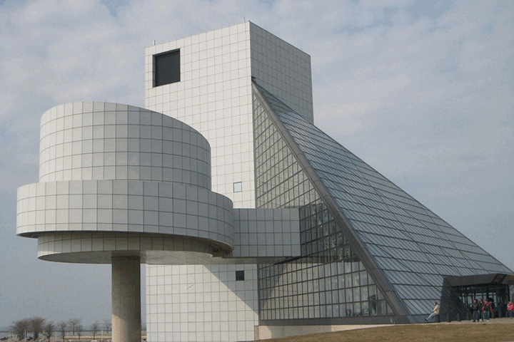

Currrent Exhibits

Watermann Gallery houses a collection of contemporary and modern art in the areas of painting, sculpture, prints, drawings, photography, film, installations and new media. Rotating exhibitions feature local artists, as well as art that is permanently housed at the gallery. The gallery also hosts an Annual Juried All-Media Art Exhibition and Annual High School Student Exhibition.
In addition, the museum has a vast collection of Native American, historic artifacts, and geologic specimens from Green Valley and its surrounding areas. Many of these items are on permanent display within the museum, while others make up some of the history-themed rotating exhibits showcased throughout the year.
Current Exhibits

- Light and Sound: A Multisensory Experence
- The Painted Desert: Plein Air Painting
- Iron and Glass: Architectual Photography